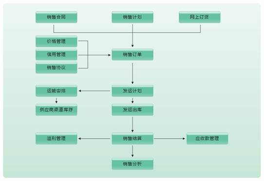
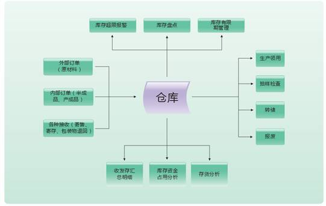
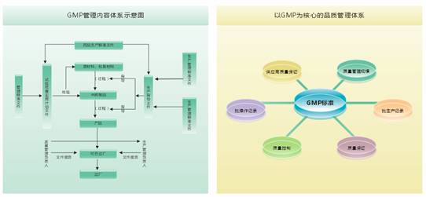

方案概述
方案目标
本方案主要是通过对医药制造业所处内、外环境的分析，参考同行业企业的最佳管理模式，通过信息技术和金蝶系统的实施应用，理顺企业财务管理、销售管理、采购管理、生产管理、成本管理等各个环节，实现物流、信息流、资金流的集成与控制，全面提高企业的效益和市场综合竟争力。
金蝶医药制造业解决方案的核心思想是“全面质量管理、快速响应市场、精细成本管理”。
财务管理目标
实现集团财务管理，加强财务和业务的集成；以先进手段加强财务对业务的监控；增强业务成本控制手段及进行销售有效的利润分析；提高财务整体运作层次，加强财务事前控制和事后分析的控制力度；.加强销售资金回笼管理，确保良好的现金流量；提高企业资金流、物流及信息流三方数据的集成性，确保数据流转畅通；加强财务预算管理，确保资金良性循环；
销售管理目标
提高客户的响应速度，准时送货，增加客户满意度；加强对客户的管理，特别是客户的信贷管理，降低企业自身的风险；提供各种灵活的定价策略，以满足不同的市场要求；提供详细、灵活多变的信息分析，及时掌握市场情况，以便作出相应的调整。
采购管理目标
加强供应商的管理，利用系统提供的数据从价格，质量，交货及时率等各方面对供应商进行考核和筛选；依据合理的采购计划，采取更好的采购策略，降低采购成本；通过实时的库存监控，降低库存物资的呆滞率，减少原材料成本。
生产管理目标
制定合理的生产计划，减少半成品、成品的库存的无故积压；实现对市场的及时响应和调整，通过基于生产线排产和生产任务单管理，实现生产的合理安排和有效管控，提升整个生产过程的效率。
成本管理目标
通过产品级、订单级、作业成本和全面成本四个层次的实际成本核算，实现成本考核由粗放到精细，从算清产品成本，落实部门级责任考核，到订单赢利评估，到制造作业成本管理，最后达到基于全面成本管理体系进行的企业全员、全面、全过程的考核层次。
方案框架

方案特点
全过程的集成解决方案
从药品研发、原材料采购、药品生产、药品销售与服务全过程提供完整集成解决方案，真正实现了商流、物流、资金流、信息流的集成。
专业的集团管控解决方案
针对医药企业发展趋向规模化、集团化的特点，我们给出了提供专业的集团管控解决方案，可以帮助医药企业集团提高集团管理效率，降低运营成本。
全面严格的质量监控体系
严格遵循GMP与GSP管理标准，确保产品的生产质量及流通安全；通过批次管理，准确责任溯源，杜绝医药安全事故，防犯经营风险。
支持多种销售与分销模式
针对医药销售具有多环节和多渠道的特点，系统支持直销、代理、批发及连锁店管理等多种模式，帮助企业快速响应市场，加速存货周转。
基于联副产品的成本管理
提供基于医药行业联副产品的多层次实际成本核算，以及标准成本体系，帮助医药企业实现成本精确核算，实现成本的严格管控。
深层多维分析支持科学决策
提供销售与分销管理、采购管理、库存管理、生产管理、成本管理等方面的深层次的多维度分析，帮助企业实现经营决策科学化。
客户价值
金蝶医药制造业解决方案，广泛借鉴同行业企业的最佳管理模式，通过信息技术和金蝶系统的实施应用，理顺企业财务管理、销售管理、采购管理、生产管理、成本管理等各个环节，促进企业内部效率的最大化。实现物流、信息流、资金流的集成与控制，全面提高企业的效益和市场综合竟争力。
集团管控支持企业成长
专业的集团管控方案，满足不断成长的医药集团公司跨地域、多机构、多组织需求的特性，实现集中财务核算、集中资金管理、全面预算管理、集中营销管理、精细渠道管理、协同供应链管理等，帮助医药集团企业建立统一、集成的集团管理信息化平台。
全面质量管理满足GMP
全面严格的质量监控体系，严格遵循GMP标准的信息系统，明确质量保证（QA）及质量控制（QC）的标准流程，实现质量的全过程跟踪、记录和追溯，确保产品的生产质量及流通安全，全面提升企业管理素质，从而提高企业社会效益和经济效益。
精细成本管理挖潜增效
帮助企业实现成本管理精细化的目标，通过及时、准确的核算成本，能够准确掌握成本构成，并通过与标准成本的对比分析，发现成本波动的原因，制定挖潜降耗的措施，使企业能够保持低成本的优势，在激烈的市场竞争中立于不败之地。
供应链协同快速响应市场
以营销管理为龙头全面带动和提升企业内部管理和外部市场监测，统一的计划体系为供应链协同运作提供了沟通的机制，支持直销、代销、批发和连锁店管理等多种模式，实现企业对于市场的快速响应。
规范业务流程并持续优化
借助信息系统的导入进行企业运营管理模式和业务流程的梳理和优化，并最终通过ERP进行固化；在此基础上，通过ERP系统的信息、流程等辅助企业实现持续创新和优化，并快速高效执行，提升企业竞争力。
商业智能支持企业科学决策
管理驾驶舱的应用，使企业具备了商业智能分析的能力，使企业经营决策更具科学性。
典型应用
销售与分销管理
管理难点
如何应对多种复杂销售模式并存对管理带来的挑战？
如何对复杂多变的价格体系进行管理和监控？
无法查清真实的药品流向，社会库存及终端销量难以掌控。
票据流、物流的不统一，不能对应收帐款及外埠库存进行有效管控。
方案流程

以销售订单为中心，对制药企业销售全过程进行实时监控和管理。结合价格管理、信用管理，实现销售协议、销售合同和销售订单管理；在此基础上进行发运管理和渠道管理，通过终端管控，实现销售对生产、采购的精确引导；严控销售结算和应收管理，实现资金控制与回流。最后，通过对销售数据进行全面分析，为公司的资源调配提供决策依据，为未来的市场变化提供预测分析。
方案描述
集中销售
医药企业在向规模化的方向发展，形成了具有多个分公司、办事处的集团医药企业，以更好服务不同客户和经销商。金蝶医药制造业解决方案，支持集中政策、集中销售、集中配送等医药企业复杂的销售模式。
价格管理
制药企业往往提供差别定价，并通过折扣或折让的方式降低其基准价格。金蝶医药制造业解决方案，提供灵活有效的价格管理，提供对商品价格、折扣的多种组合方式的维护，帮助企业保证销售政策的有效执行，及时响应快速多变的市场需求。
信用管理
制药企业为了扩大产品销售，往往采用赊销的方式，形成了一定的应收账款。金蝶医药制造业解决方案，提供信用控制内容、信用额度、信用控制点、控制范围等的灵活设置功能，实现信用控制与信用分析，规避销售业务中的资金回收风险。
发运管理
金蝶医药制造业解决方案，支持自己配送和第三方物流等多种发货方式，可以根据销售订单确定发运对象、发运方式、发运时间，安排发运计划；可以根据实际发运需求及地理条件，科学定义发运线路，优化运输资源的利用效率，降低成本。
渠道管理
制药企业往往具有庞大的营销团队和复杂的营销渠道，中间环节涉及层层的分销商、零售终端。金蝶医药制造业解决方案，支持网上订货，使企业与渠道间的订单处理更加简单、清晰；支持渠道上报销售库存数据实现渠道库存销售管理。
应收款管理
金蝶医药制造业解决方案，通过应收款与收款的核销处理可掌握欠款情况，并进行往来业务对账，账龄分析，及时做催款处理，帮助用户实现资金的快速周转及回笼，节约资金占用成本。
销售分析
据销售数据进行综合分析。系统能够提供以下分析内容。
多维度（如产品、渠道、区域、销售员等）的销售业绩分析。
多维度（如产品、渠道、区域）的销售毛利分析。
客户价值分析。渠道客户销售收入、毛利排序；客户回款排序。
客户流失情况分析。当年销售收入较上年减少客户名单。
方案价值
多种销售销售角色的定义、多种销售模式的支持，可以使企业从容面对快速多变的市场环境；
科学的定价策略和定价流程可以帮助企业制定完善的价格体系；
实现“发货找合同、开票找发货、回款冲发票”三级钩稽，以此确保应收帐等帐务数据具体细化到单据和产品；
严格信用管理及订单管理，大大降低了企业的经营风险。
库存管理
管理难点
如何实现集中库存管理，全面了解库存信息，有效调度企业资源？
如何使物料的流动更加快捷，提高仓库对生产需求的反应速度？
如何有效进行库存分析，及时进行预警报告，支持管理决策？
如何对发货进行跟踪和监控，确保发出产品如期送达客户？
系统流程

金蝶医药制造业解决方案根据制药企业物流管理的特点，全面规划和部署企业原材料、在制品和产成品等各仓储环节的管理职能，实现仓储管理规范化、标准化；通过仓储信息的共享保障生产的物料供给，有效降低各物流环节的库存占用。并通过库存信息的统计分析，帮助企业了解各类物料的周转、资金占用情况，及时发现各物流环节的呆滞物料，提高物流供应链的运行效率。
方案描述
入库管理
入库管理提供外购入库、产品入库、委外加工入库、其他入库、虚仓入库、赠品入库业务，结合批次管理、保质期管理、条形码管理等，满足企业标准以及特殊的入库业务，建立规范的仓库作业流程，提高仓库运作效率。
出库管理
提供销售出库、领料单、委外加工出库、其他出库、受托加工领料、虚仓出库、赠品出库业务，结合批次管理、保质期管理、条形码管理等，满足企业标准以及特殊的出库业务，建立规范的仓库作业流程，提高仓库运作效率。
批次管理
提供完善的批次管理设置、批次编码规则设置、日常业务处理、批次调整、批次自动出库、批次跟踪等综合的批次管理功能，帮助企业有效的进行批次管理，满足经营管理不同方面的应用需要。
盘点管理
可分仓库、仓位、物料、截至日期或即时库存进行盘点作业，同时支持物料的周期盘点。支持历史盘点数据的保存及查询。实现盘点数据导入导出功能，提高企业盘点处理效率。
即时库存管理
即时库存是用来查询当前物料实时库存数量和相关信息。系统提供智能即时库存查询及单据录入时即时库存显示功能，可按仓库、仓位、批次、序列号、保质期等多维度查询方式，快速了解实时库存，提高作业效率。
保质期管理
提供物料的保质期管理，用户可以对保质期物料进行设置、初始资料录入、日常单据处理、实时库存查询和报表查询、并提供在线到期存货预警功能。
多计量单位管理
提供对同一物料分别设置采购、销售、仓库及生产计量单位功能，支持浮动计量单位，同时所有库存单据及报表均能实现多计量单位的显示及管理，帮助企业满足不同业务领域、不同规格和包装的多计量单位需求。
预警管理
提供物料保质期、仓库负库存、周期盘点、最高库存、最低库存、安全库存等关键业务的系统预警，帮助企业实时、准确掌握仓库管理信息的变化，及时制定业务应对策略。
方案价值
实现多工厂多仓库集中管理，使企业全面掌握仓库实时库存；
全面支持条形码和RFID识别，使企业物流操作数字化、自动化，提高企业物流流转效率和管理效率；
提供全面的库存分析功能，支持ABC分析、呆滞料分析、周转率分析等方法，为科学的库存决策提供数据保障；
预警平台依据预警条件自动发出预警信息，从而及时进行处理，减少库存损失。
质量管理
管理难点
质量管理如何遵循、贯彻GMP标准？
如何准确进行质量跟踪和追溯，实现从采购、生产、销售全过程的质量监控？
如何利用质检信息为企业管理持续改进提高信息支持？
系统流程

金蝶医药制造业解决方案根据制药企业质量管理的特点，全面部署材料检验、委外检验、制造过程检验和售后服务等各质量控制环节的管理职能，实现检验过程规范化，标准化。通过质量检验信息的关联查询，实现产品的全过程质量追溯；并通过质量信息的统计分析，帮助企业发现质量形成过程中的管理薄弱环节，为企业管理持续改进提供信息支持。
方案描述
质量管理规范
制定、修订内控标准、检验操规；取样留样的制度；仪器、设备、试剂等管理方法。以及质管、质检人员职责。
严格按GMP标准制定质量计划，明确质量保证（QA）及质量控制（QC）的标准流程。
提供质量管理所需的基本数据的灵活自定义功能,例如:检验项目分类、检验项目自定义、请验类型自定义等。
质量控制（QC）
可以实现对原辅材料、包材、中间体、产成品的质量检验，完成请验、取样、检验、留样等过程，形成检验报告。
对质量检验及处理结果，系统可以自动反馈给相关部门，并提供相关记录的查询、汇总和统计功能。
从SPC系统中导出质量控制图，及时预警质量问题。
质量保证（QA）
严格对供应商的认证及考核，可以对认证过程中的信息进行记录，对认证通过的供应商,才允许与该供应商发生业务往来；供应商的档案应记录记录供应商的地址、电话、联系人、认证情况、供货品种、供货能力等。
对生产设备要定期维修、保养和验证。
检验设备要定期检验。设备仪器的使用维修、保养均应作记录，并有专人管理。
GMP文件管理
可以对GMP文件进行分类管理，提供保存、审批、查询、修改、删除的功能，并能够分人员、分级别设置严格细致的管理权限，以保证文件的安全性和保密性。
对GMP文件可以依据关键字进行检索，检索时显示现行文件列表，提供多种方便快捷的查询方式。
在GMP文件管理中能记录文件代码、版本号、修改日期、修改人、审核人、审核日期等关键信息，并可随时对这些信息进行查询，可以保存文件的不同版本。
方案价值
可以实现批生产记录的电子化处理，方便管理查询；
GMP文件的应用实施；
与第三方SPC系统实现无缝对接，真正做到即时监控产品生产质量，并可提前预警质量风险。
成功案例－－仁和（集团）发展有限公司
企业概况
仁和（集团）发展有限公司组建于2001年，现已发展成为一家集科、工、贸于一体，产、供、销一条龙的现代医药企业集团。仁和集团旗下拥有“仁和药业股份有限公司”（股票代码:000650）、“江西药都仁和制药有限公司”、“江西闪亮制药有限公司”、“江西康美医药保健品有限公司”、“江西仁和药用塑胶制品有限公司”等多家子公司，员工5000余人。从2001年至2007年，集团所属各商业企业取得了销售收入连年大幅度增长的骄人业绩。2007年实现销售收入18.6亿元，居全国医药行业五十强之列。2008年，仁和集团超额完成了年度经营目标任务，在工业产值、销售收入、贡献国家税收等主要经济指标方面再创佳绩。
系统应用
为了加快企业的发展，仁和集团对企业的信息化建设投入了大量的财力与物力。早在几年前仁和集团就采用了国内某软件企业的财务及业务系统，但随着企业规模的不断扩大，企业对信息数据处理的要求越来越高,特别是近几年为了应对越来越激烈的市场竟争，仁和集团在管理方面不断的调整和优化，形成了自己独特的企业管理文化和流程，几年前选择的行业应用软件已经越来越难以满足企业发展的要求。 2005年2月，仁和与金蝶合作，运用金蝶K/3ERP系统构建了符合仁和集团个性化需求的软件应用配置和二次开发平台以及远程控制平台系统。系统成功运行，备受好评，随着仁和企业的不断发展以及集团二五计划的规划，仁和集团在集团集中管控（资金、物流、采购等）、企业日常业务管理流程化、集团信息数据交互等方面提出了更高的要求，集团在应对未来商业环境的不断变化对软件系统的应用扩展性的要求尤为重视。在双方的充分沟通下仁和集团选择了金蝶第三代平台化EAS系统，通过金蝶EAS集成管理、随需应变的特性构筑仁和集团未来的企业信息化管理平台，确保信息系统能够满足仁和集团不断发展的需要。
应用效果
库存占用减少20%
采购提前期缩短50%
停工待料减少60%
节约费用656万
客户感言
我本人对于生产、销售、以及物料完成情况十分关注，通过在项目实施过程软件在整个生产、销售管理上的效果已经出现。与金蝶携手进步，合作共赢。
－－仁和（集团）发展有限公司总裁助理 肖国华
部分成功客户
- 中国医药集团
- 仁和（集团）发展有限公司
- 金陵药业股份有限公司
- 九州通集团有限公司
- 武汉健民药业集团股份有限公司
- 山东威高集团有限公司
- 安徽淮南医药集团有限公司
- 扬子江药业集团
- 通化金马药业集团股份有限公司
- 太阳石(唐山)药业有限公司
- 山东新华制药股份有限公司
- 上海新亚药业有限公司
- 贵州本草世家药业有限公司
- 新疆药业集团新疆制药厂